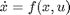
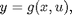
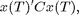
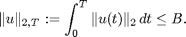
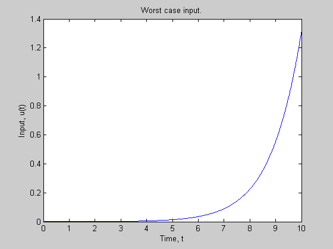

Using the Worstcase Solver - Demo 2
Timothy J. Wheeler
Dept. of Mechanical Engineering
University of California, Berkeley
Contents
Introduction
Consider a dynamic system of the form


where x(0)=0. Given positive scalars B and T and a positive definite matrix C, the goal is to maximize

subject to the constraints

Of course, since we are only interested in the value of x at time T, we only need to consider inputs defined on the interval [0,T].
Create a model of the system.
First, polynomial variables are created using the pvar command. Then, these variables are used to define the functions f and g, which are also polynomial variables.
pvar x1 x2 u states = [x1;x2]; inputs = u; f = [ -x1 + x2 - x1*x2^2 ; -x2*x1^2 - x2 + u ]; g = states;
Then, a polysys object is created from the polynomials f and g.
sys = polysys(f,g,states,inputs);
The polynomial objects states and inputs specify the ordering of the variables. That is, by setting states(1) = x1, we specify that f(1) is the time derivative of x1.
Optimization parameters.
Use the following values for the optimization parameters (defined above):
T = 10; B = 1; C = eye(2);
The time vector t specifies the time window (T=t(end)) and the points at which the system trajectory is computed.
t = linspace(0,T,1000)';
Set options for worstcase solver.
Create a @wcoptions object that contains the default options.
opt = wcoptions();
Specify the maximum number of iterations and tell the solver to not display any information while solving.
opt.MaxIter = 500;
opt.PlotProgress = 'none';
Specify the desired cost function.
opt.Objective = 'Final';
opt.FinalCostMatrix = C;
Specify the bound on the input.
opt.InputL2Norm = B;
Find worst input.
[tOut,x,y,u] = worstcase(sys,t,opt);
Display results.
cost = x(end,:)*C*x(end,:)'; fprintf( '||u|| = %0.4f, cost = %0.4f\n', B, cost ); figure; plot(tOut,u) xlabel('Time, t') ylabel('Input, u(t)') title('Worst case input.')
||u|| = 1.0000, cost = 0.5727